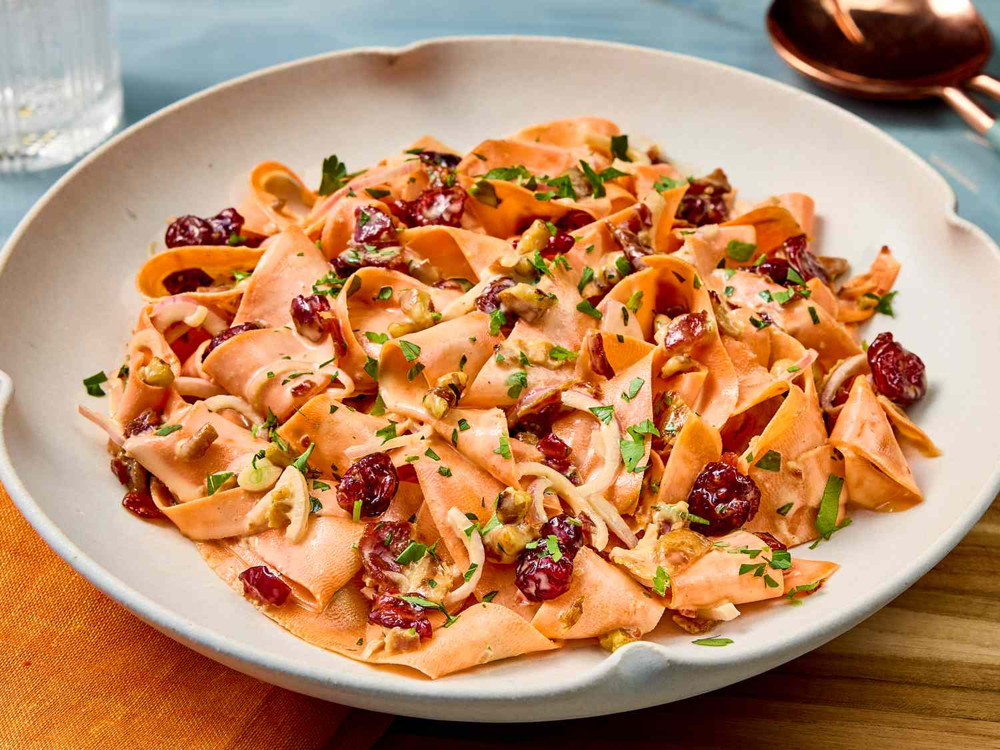

Return
Carrot Ribbon Salad

Description
This carrot ribbon salad, with a tangy dressing and bacon, is quick to shake together in a jar, and the ribbon-cut carrots make a beautiful presentation.
Ingredients
- 1/4 cup mayonnaise
- 1 1/2 tablespoons white sugar
- 1 tablespoon apple cider vinegar
- 4 carrots, peeled into wide ribbons using a vegetable peeler (about 4 cups)
- 1/3 cup crumbled cooked bacon
- 1/3 cup thinly sliced shallots
- 3 tabblespoons dried sweetened cranberries
- 3 tablespoons honey-roasted pecan pieces
- 2 tablespoons chopped fresh flat-leaf parsley, plus more for garnish
Steps
- Gather the ingredients.
- Whisk together mayonnaise, sugar, vinegar, and salt in a 1-quart container with a lid.
- Add carrots, bacon, shallots, cranberries, pecan pieces, and parsley;
Cover and shake until carrots are evenly coated in a mayonnaise mixture.
- Transfer to a serving bowl and garnish with parsley.